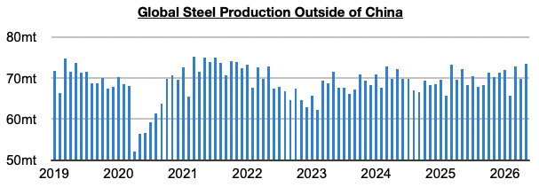
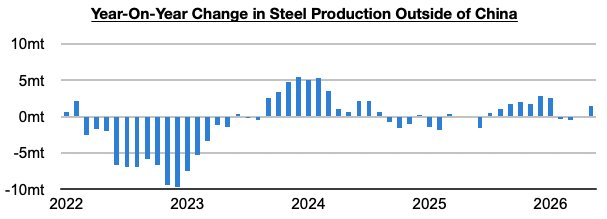
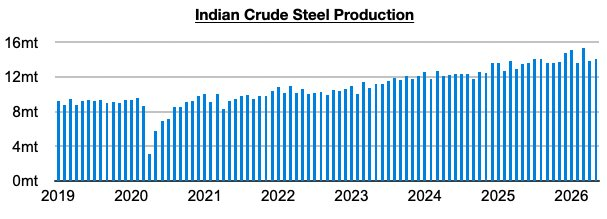

As we discussed in Commodore Research's most recent Weekly Executive Report, global steel production totaled approximately 157.9 million tons in March. This is up month-on-month by 4.5 million tons (3%) but is down year-on-year by 900,000 tons (-1%). Steel production outside of China totaled approximately 73.5 million tons. This is up month-on-month by 3.7 million tons (5%) and is up year-on-year by 1.4 million tons (2%).

Steel production ex-China has now increased on a year-on-year basis for two straight months. Previously, it had contracted on a year-on-year basis for two straight months.

Taking India out of the equation, production grew year-on-year by 800,000 tons (1%). Previously, production ex-China/India had contracted on a year-on-year basis for three straight months.
India's own steel production totaled 14.1 million tons last month. This is up month-on-month by 300,000 tons (2%) and is up year-on-year by 600,000 tons (4%). Production has now grown on a year-on-year basis for thirty-nine straight months.
